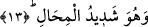

Yağmur dolu “ağır bulutları” yani su ile ağırlaşmış bulutları ilk olarak “meydana
getiren O’dur.” Burada Allah’ın bulutu yok edip yeniden yarattığına delâlet vardır.
Suyun gökten mi buluta indiği yoksa Allah’ın suyu bulutta yaratmasından sonra bulutun
mu yağdırdığı konusunda farklı görüşler mevcuttur.
Şeyhzâde Hâşiyesi’nde şöyle denilir: “Bulut, nemli mâî parçalarla hava
parçalarından oluşmuş bir cisimdir. Hava parçacıkları ile karışık vaziyette bulunan su
parçacıkları, dilediğini yapmaya kâdir Yaratıcı’nın kudretiyle hava boşluğunda meydana
gelmekte, oluşmaktadır.
Yağmurlar çeşit çeşittir. Bazen damlaları büyük, bazen küçük olur. Bazıları birbirine
yakın, bazıları ise uzak olur. Bazen uzun süreli yağar, bazen kısa süreli yağar.
Yeryüzünün tabîatı ile buharları ısıtan Güneş’in tabîatı bir olduğu halde yağmurların bu
sıfatlarda birbirinden ayrı olması, mutlak hür irâdesiyle hareket eden bir fâilinin öyle
olmalarını istemesiyle gerçekleşmiştir.”
Tecrübe, duâ ve yakarışın yağmur yağmasında büyük te’siri olduğunu göstermektedir.
İstiska (yağmur) namazı bu sebeple meşru olmuştur. Bundan anlıyoruz ki duâ, yağmur
yağmasına te’sir eder. Bu yerin tabiat ve özelliği değil, fâilin kudretidir.
Fakir (Bursevî) de der ki: Burada reddedilmesi gereken hâdiselerin, Allah’ın te’siri
dikkate alınmadan kâinâta isnâd edilmesidir. Müsebbib gözetilerek hâdiselerin
sebeplere isnâdı ise kabul edilebilir. Çünkü bu âlem sebepler ve hikmet âlemidir. İlâhî
kudreti daha fazla gösteren bir açıklama kabul edilmeye daha lâyıktır.
13. Gök gürültüsü O’nu hamd ile tesbih eder. Melekler de O’nun heybetinden
dolayı tesbih ederler. Onlar, Allah hakkında mücâdele edip dururken O, yıldırımlar
gönderip onlarla dilediğini çarpar. Ve O, azâbı pek şiddetli olandır.
“Gök gürültüsü O’nu hamd ile” O’na hamd ederek “tesbih eder.” Yani “Sübhânellah
ve el-Hamdü lillâh” diye haykırır.
Bir hadiste şöyle buyrulur: “Yıldırım ve gök gürültüsü, yeryüzündekiler için
tehdîddir. Onu gördüğünüz zaman konuşmayı bırakın ve istiğfar etmeye bakın.”[114]
Gök gürültüsü şiddetlendiği zaman Hz. Peygamber (a.s.) duâ etmiştir:
“Öfkenle bizi öldürme, azâbınla helâk eyleme.Bundan önce bize âfiyet ihsân et.”[115]